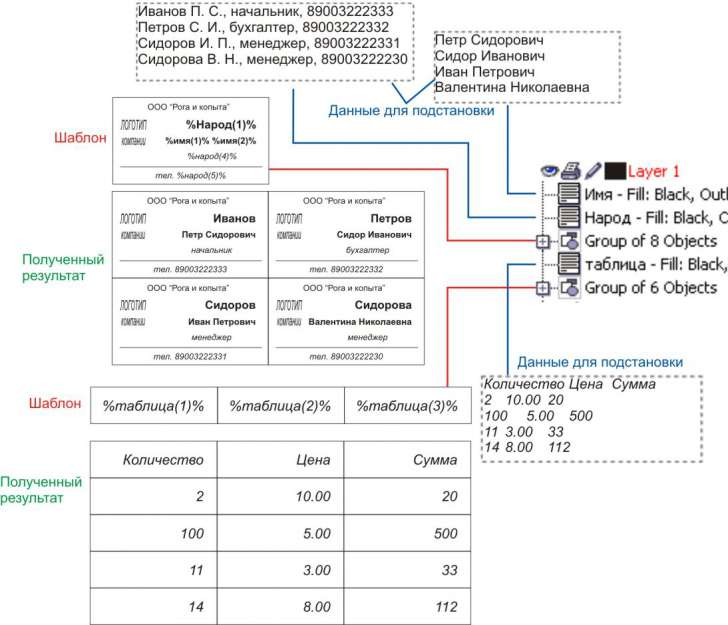

Подстановка данных
Работа дизайнером это не всегда вдохновенное творчество. Часто приходится заниматься рутинной работой, совершая одни и те же действия несколько раз. Макросы хорошо облегчают жизнь в этом понимании, но как правило, выполняют какую-то одну функцию. Например, заказчик утвердил вариант визитки и прислал список работников с должностями. Можно, конечно, "копи-пастить" вырезая из текста письма необходимые данные или набирать в каждой копии визитки текст заново. Или, как вариант, попробовать воспользоваться моим макросом Numeranger v2.0
Собственно говоря, принцип работы основных частей макроса подробно описан в другой теме (http://cdrpro.ru/forum/13-473-0-17), и можно было бы продолжить описание дополнительных функций там же. Но поскольку работа с переменными данными прямо не относится к "нумерации и размещению объектов", то в этой отдельной теме я и опишу как работает обработка переменных данных.
Итак, у нас есть список сотрудников, должности и телефоны.
Представлено это, скажем в виде
Фамилия И. О., должность, телефон
(любое сходство с настоящими именами, названиями и телефонами считать случайным)
1. Открываем макет визитки, создаем текстовый объект и заполняем его данными, скопировав их из текста письма или просто последовательно напечатав.
2. В менеджере объектов присваиваем этому текстовому объекту имя, например, Народ.
3. В макете визитки создаем три текстовых поля, куда будут подставляться значения.
В первом поле пишем %Народ(1)%, во втором %Народ(4)%, и в третьем %Народ(5)%. Это означает, что для первого поля будут браться значения из текстового объекта с именем народ, который мы создали в п.1. Цифра в скобках означает порядковый номер используемого слова. Для второго поля логичнее было бы использовать "двойку", просто макрос при выборе слова руководствуется символами-разделителями в виде пробела или знаков препинания, поэтому на цифру "2" макрос выберет букву имени, на "3" - букву отчества, на "4" - должность и на "5" соответственно телефон. Символ процента вначале и в конце указывает на использование слова-индентификатора, которое будет заменяться на подставляемое значение из очередной строки. Для каждого поля можно установить нужное выравнивание, влево, по центру или вправо.
Т.е. общий принцип: создаем текстовый объект, один или несколько, со строчными данными и даем ему имя, на которое будем ссылаться. Каждая строка - один набор данных для очередной копии визитки. В макете создаем текст, в котором указываем имя объекта, откуда берем строку данных, и индекс, указывающий какое слово из строки данных использовать и подставлять. При отсутствии индекса подставится вся строка целиком, при неправильном индексе получим предупреждение.
Предположим, что заказчик вспомнил полные имена и отчества своих сотрудников и прислал их новым письмом. Создаем новый текстовый объект, заполняем его именами-отчествами, и даем название, скажем, Имя. В макете визитки делаем текстовую ссылку на %Имя(1)%, как на имя сотрудника, и %Имя(2)% на отчество.
Т.е. наша визитка в качестве источника данных использует два текстовых объекта, содержащих необходимую нам построчную информацию.
Вот и все. Выделяем сгруппированный макет, запускаем макрос и радуемся. :)
На рисунке представлен результат работы макроса.

Подобным способом можно, например, заполнять таблицы.
Конечно, подставляемые значения могут быть различными по длине слов и некоторые могут вылезать за пределы визитки. Возможно в следующей версии макроса я добавлю возможность сжатия текста или уменьшения кегля шрифта.
По ряду соображений для нумерации и подстановки данных используются только текстовые объекты, входящие непосредственно в выделенную группу. Т.е. все вложенные группы, в которых также могут быть тексты с числами или идентификаторами - игнорируются. Содержимое поверклипов и символов также не учитывается.
Разумеется у любого макроса, помимо плюсов, должны быть и минусы. Есть они и в моем макросе. Он - бесплатный :)
Шучу, конечно, минусов хватает. Если в одной строке поставить идентификатор для подстановки данных и числовые данные для нумерации - обработается только идентификатор. Кроме того нумерация начинается со второй копии, а подстановка данных - с первой. Идентификаторы отделяются друг от друга пробелами, табуляцией и некоторыми знаками пунктуации, на окне макроса об этом указывают три заблокированных поля.
В общем, пробуйте...
shark, я вас уже давно люблю... :)
natibor, мое чувство - взаимно! :)
Как-то нечем было заняться и я немного доработал свой макрос Numeranger до 3-й версии.
Вот что там теперь появилось:
размещение
- появилась возможность размещения круглых объектов в шахматном порядке, выделяете фигуру, нажимаете кнопку с синим "кружком", включаете режим "предпросмотра" и можно более-менее компактно расположить объекты (рис. 4);
- значения отступов, т.е. расстояний между копируемыми объектами, теперь могут быть отрицательными. Как раз для вышеприведенного случая с круглыми объектами;
- еще есть кнопка "авторазмещения", (с двумя квадратными скобочками), нажав которую можно "нарисовать" мышкой прямоугольник, внутри которого максимально разместятся копии выделенного объекта, в полях "количества" и "отступа" при этом появятся соответствующие значения. Удобно для быстрой прикидки сколько объектов поместится на листе;
нумерация
- здесь ничего не изменилось, все так же текстовый объект (один или несколько) просчитывается и увеличивается на единицу. Простейший пример, скажем, для номерков - создаете текстовый объект с цифрой "1", включаете выравнивание по центру, накладываете на него рамку например, (кружок или прямоугольник), группируете и запускаете макрос, отметив в нем поле "С нумерацией";
подстановка данных
- теперь макрос корректно понимает шрифт, подставляемый текст размещается таким же шрифтом, что и в шаблоне;
- появилась возможность подстановки не только текстовых данных, но и объектов - картинок или групп.
Вот как это работает:
"забрасываете" в Корел несколько размещаемых объектов - картинок (или групп) и объединяете их в одну группу объектов. Полученной группе в Менеджере Объектов даете имя, скажем Pictures. Создаете также группу объектов-шаблон (рис. 5), который будет копироваться нужное число раз и в котором будет происходить подстановка данных. Подстановка текстовых данных объяснена в начале статьи, так что не буду повторяться, а вот для подстановки объектов или картинок необходимо будет создать прямоугольник внутри группы-шаблона и дать ему такое же имя, какое вы дали группе подставляемых картинок. Единственное условие имя должно быть заключено с двух сторон символами процента (%). Например, группа картинок называется Pictures, соответственно, имя замещаемого прямоугольника должно быть %Pictures%. Есть еще один момент, связанный с масштабированием подставляемых картинок: по умолчанию картинки выравниваются по левому верхнему углу и подставляются тем же размером, каким вы их загрузили в Корел. Но в имени подставляемого прямоугольника можно указать на возможность пропорционального или непропорционального масштабирования картинки, чтобы она полностью или по ширине/высоте вписалась в этот самый подставляемый прямоугольник. Для этого после %Pictures% можно написать буквы W и/или H. W - это пропорциональное масштабирование по ширине (рис.2), H - пропорциональное масштабирование по высоте (рис. 1), а WH - непропорциональное "вписывание" картинки в размер прямогольника (рис.3).
На рисунке 3 изображен пример работы макроса с подстановкой текстовых данных из "параграфных" текстовых объектов names и Address и подстановкой группы объектов Pictures (из трех картинок и одной группы [картинка + наложенный белый ромб]. Это обязательно должен быть один объект-группа, иначе макрос размножит ромб или картинку по-отдельности);
- кнопки "пробел" и "табуляция" стали отключаемыми. Если отключить их обе, то макрос в качестве разделителя данных использует только лишь символы "запятая", "двоеточие" и "точка с запятой". В принципе, несложно отключить и их, но таких предложений, вроде бы, пока не поступало.
Помимо всего прочего, макрос стал немножко интеллектуален, сам отключает ненужные функции при наведении мышкой на форму или же возвращает выделение на объект, если вы его случайно сняли. Также немного переработан "предпросмотр". Еще была задумка "предпросмотровые" объекты сделать не прямоугольниками, как обычно, а повторяющими внешний контур размножаемого объекта. Такую процедуру я написал, но задумался надо ли ее включать в макрос.
В общем, пробуйте, да пребудет с вами сила VBA :)
shark, где у нас смайлик "бью челом"?! ну или хотя бы огромные чмоки...
На Х5 работает, на Х7 нет... Хочу перейти с пятёрки, но этот момент существенный. Есть предположения?
Вторая версия работает на х7. Вот ссылка forum.oberonplace.com/showthread.php?t=7563. Пака работает. Даже успел расстроится, но висит родимая.
olegin1, судя по картинке, у вас просто не выделен ни один объект. Нарисуйте хотя бы простейший прямоугольник, выделите его и запустите макрос повторно
Действительно, заработало. Спасибо.
Но вторую версию все же закину в архив тоже.
Страницы